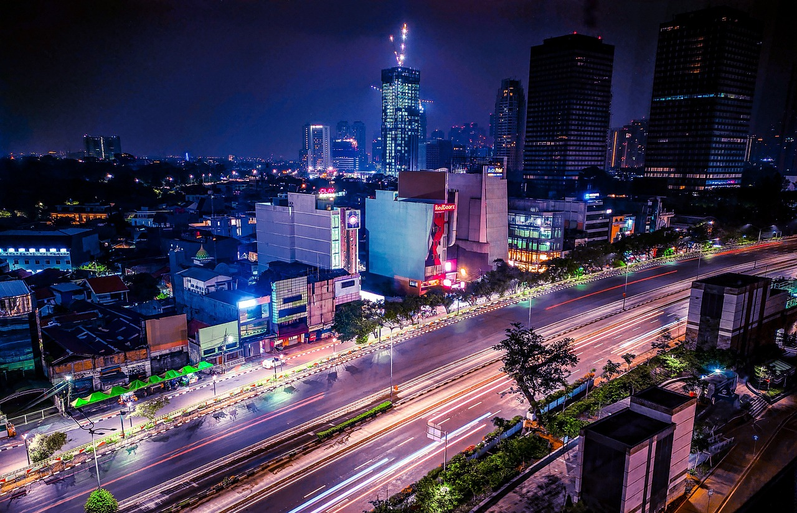

A városoknak hála tudnak az emberek különböző helyeken lakni, ha csak egy város lenne az egész Földön akkor mindenki ugyanott lakna

A nagyvárosok a fejlődés és a hatalmas zsúfoltság központjai. A túlnépesedés és a klímaváltozás miatt azonban többen a túlélésért küzdenek.
Tudj meg többet| Városok | Lakossák | Területe |
| Jakarta | 41 913 860 | 4 883 km² |
| Dhaka | 36 585 479 | 6 812 km² |
| Tokyo | 33 412 512 | 5 148 km² |
3 legnagyobb város